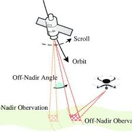
3 Corrections
3.1 3.1 Summary
3.1.1 3.1.1 Data Distortion
Remotely sensed images often require corrections to be available for analysis. The image distortions occur due to the following factors:
- View angle: Depending on the angle of the sensor, the area of interest might look different.
- Topography: The shape of terrain might cause some flaws in the image.
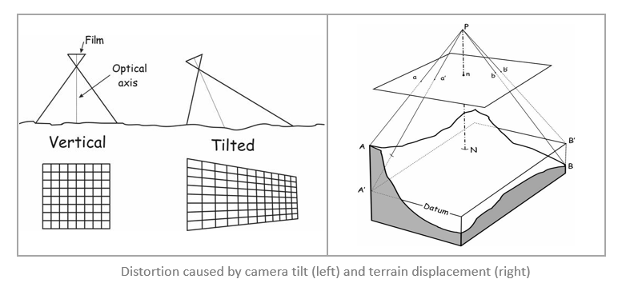
- Earth rotation: Earth’s spinning motion poses another difficulty. Straight lines of an image can appear to be unnaturally curved or deformed.
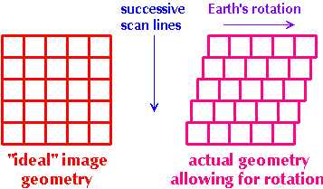
3.1.2 3.1.2 Data Corrections
Geometric, Atmospheric and Orthorectification corrections can be applied to correct distorted images.
3.1.2.1 (1) Geometric Correction
Cause: geometric error, introduced by internal and external factors (attitude and altitude change).
Solution:
Ground Control Points (GCP): “known points” in both sensed image and a reference dataBackward mapping (Linear model): process of using GCP to infer the characteristics of the corresponding remote sensing data by building or refining modelsModel verification: RMSE can be used - threshold 0.5
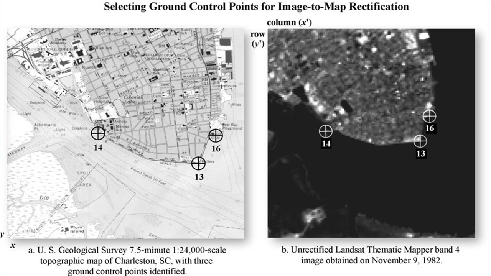

3.1.2.2 (2) Atmospheric Correction
- This method removes scattering and absorption effects of the atmosphere to improve the image - absorption and scattering makes an image somewhat blurry as they reduce contrast of image.
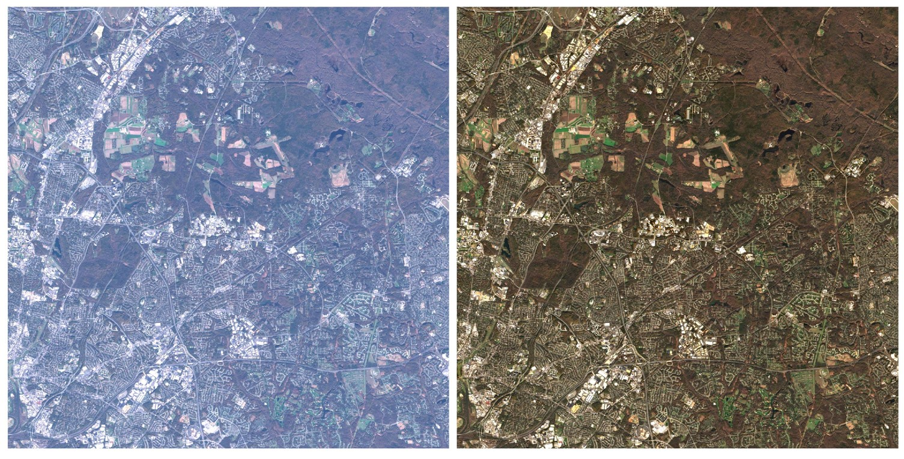
- Solution: Relative and Absolute approaches
Relative atmospheric correction
- Dark Object Subtraction (DOS):
- Searches each band for the darkest pixel value
- The scattering is removed by subtracting this value from every pixel in the band.
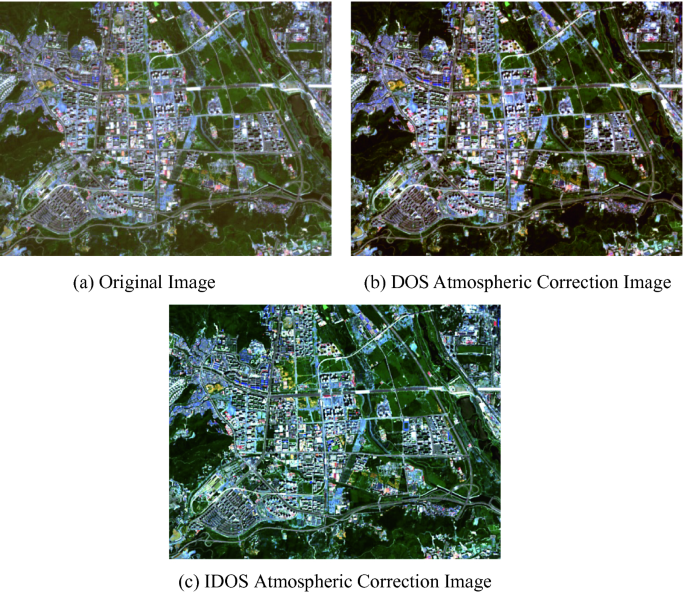
- Pseudo-Invariant Features (PIFs):
- Grounded upon statistical invariance of artificial elements, which do not exhibit seasonal variation
- The differences in PIFs reflectance between dates are assumed to be due to atmospheric conditions and are linearly related.
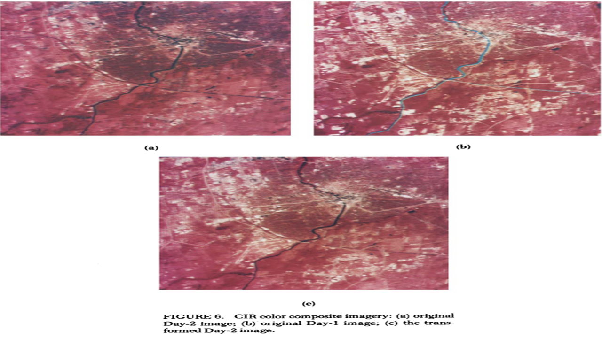
Absolute atmospheric correction converts digital brightness values into scaled surface reflectance by using atmospheric radiative transfer models.
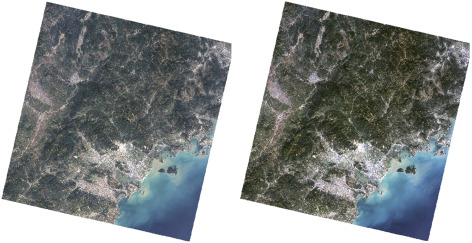
3.1.2.3 (3) Orthorectification Correction
- This method removes distortions by making the images looked right above (at nadir). This correction necessitates sensor geometry and an elevation model.

3.1.3 Data Join
Joining remote sensed images are coined as “Mosaicking”. Using histogram matching algorithm, similar brightness values are given to two images that are overlapped, and then the feathering is conducted.
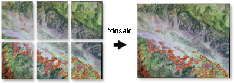
3.1.2.4 3.1.4 Image Enhancement
Materials reflect different amounts of energy in the same wavelengths. However, sensors have a fixed range of Digital Number (DN) values between 4 to 105.
The following methods could enhance the visual appearance of images by expanding this range.
Minimum-Maximum: Utilises the full range of available brightness values
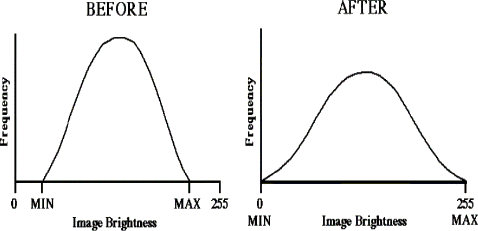
- Percentage Linear and Standard Deviation Stretch:
- Similar to the Minimum-Maximum linear contrast stretch
- It uses a specified minimum and maximum values
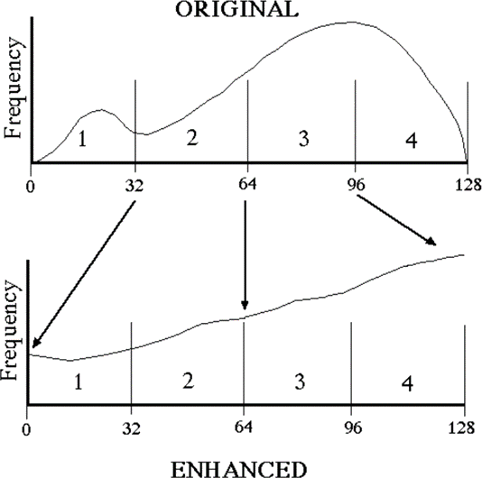
- Piecewise Linear Contrast Stretch: Used when the distribution of a histogram in an image is bi or trimodal (Jensen and Schill, n.d.).
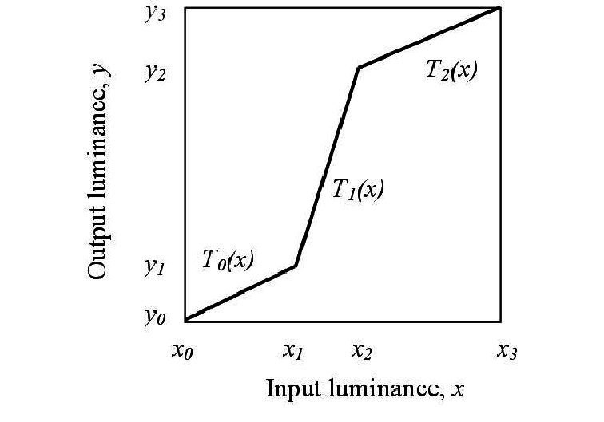
3.2 3.2 Application
Image enhancement techniques not only enhance visual appearance but also allow for comparison between images retrieved from different years. In this part, I did research about how else image enhancement technology can be utilised apart from improving an image quality, and a novel way of using a deep learning model to enhance the quality of image.
3.2.0.1 3.2.1 RSCNN: A CNN-Based Method to Enhance Low-Light Remote-Sensing Images
Summary: Hu et al. (2020) proposes a new neural network architecture called Remote-Sensing CNN (RSCNN) for enhancing low-light remote-sensing images. RSCNN uses CNNs, including LLCNN and SRCNN, and an upsampling operator to learn multi-scaled features. Due to the lack of labeled training data in remote-sensing image datasets, the study uses real natural image patches to train initially and fine-tunes with simulated remote-sensing image pairs. The study’s experiments show that RSCNN outperforms conventional techniques in terms of SSIM and PSNR and has qualitative advantages in denoising and maintaining color and texture authenticity.
Data:
DeepISP: It consists of 110 pairs of normal and low-light exposure images
UCMerced: This dataset contains 21 types of land use images
Result: The results of RSCNN are compared with traditional low-light enhancement algorithms, and the results show that RSCNN has better quantitative analysis indicators and can be applied to low-light remote-sensing image enhancement tasks.
Comment:
In addition to image enhancement technologies covered in the lecture, this study demonstrates that Convolutional Neural Networks (CNN) can enhance visual appearance of image greatly. The study’s proposed RSCNN architecture is an exciting development in image enhancement technology, particularly for remote-sensing images.
The use of real natural image patches for initial training and fine-tuning with simulated remote-sensing images is a smart approach to addressing the lack of labeled training data. The experiments’ qualitative and quantitative results demonstrate RSCNN’s superiority over conventional techniques, which is encouraging.
Overall, this research offered potentials in combining two different fields of studies - CNN and remote sensing -, and suggested that adding complexity to imagery can help us more natural results with more realistic textures and vivid details.
Limitation: The proposed method is evaluated on a limited set of datasets, and the generalization of the method to other remote-sensing datasets needs to be further investigated.
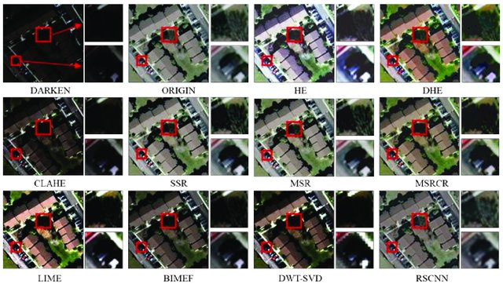

3.3 3.3 Reflection
This week’s content gave me an answer for the questions I had from the first week. Numerous data correction technologies improve the quality of image collected and allow for facilitating data to be ready for analysis.
Takeaway message
- As there are a variety of correction methods, it seems necessary to understand what causes flaws in the remotely sensed images and how to employ an appropriate correction method to that specific datasets.
A bit of thought…..
Any preference in correction method?
- I wonder whether there is a preference in a particular correction method over other correction methods, depending on the domain of study field or industry.
Object-detection model in urban environment?!
In the context of built environment, there are many objects in cities that look similar to each other, and this might pose a difficulty in classifying them. In Data Science module, I came across a deep learning model called YOLOv5, which detects objects in remotely sensed images. The model was trained on custom datasets. Once the training is done, the model can be applied to satellite imagery of different resolutions and identify objects.
If we create a customised dataset which contains specific information about some types of urban infrastructure, and feed these to train a model, we might be able to build a deep learning object detection model targeted at urban environment.
Together with the data correction and image enhancement methods we learnt, I think the object detection model could enable us to classify some technically-challenging objects in an urban setting.
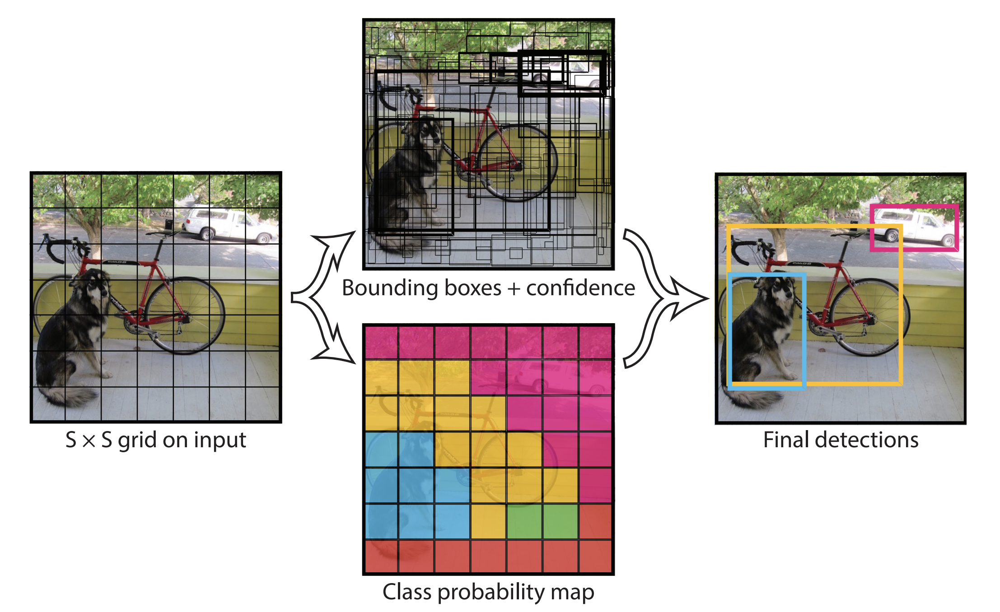
3.4 References
Google Earth Engine for OSINT. (n.d.) ‘Object Detection in Satellite Imagery’[Online]. Available at: https://oballinger.github.io/GEE_OSINT/object_detection.html (Acessed: 08.02.2023)
Jensen, J.H. and Schill, S.R. (n.d.) ‘Contrast Enhancement’[PDF]. Available at: http://knightlab.org/rscc/legacy/RSCC_Contrast_Enhancement.pdf (Accessed: 08.02.2023)